Tablas
Una tabla está formada por celdas, agrupadas por filas y columnas.
Las tablas permiten organizar la información en filas y columnas, de forma que se pueden realizar operaciones y
tratamientos sobre los datos. Por ejemplo, obtener el valor medio de una columna u ordenar una lista de nombres.
Observación:
Las tablas son una forma de organizar los datos mucho más potente que utilizando las tabulaciones u otros métodos.
Crear tablas
Para crear una tabla accedemos siempre desde la pestaña Insertar > grupo Tablas > botón Tabla.
Allí encontraremos las tres posibles formas de crear tablas:
-
Una de las formas es utilizar la cuadrícula que simula una tabla. Cada cuadrado representa una celda y al pasar}
el ratón sobre ella se coloreará en naranja la selección que realicemos. Al hacer clic confirmamos que la selección
se ha realizado y se inserta la tabla en el documento.
-
La segunda opción es haciendo clic en Insertar Tabla. Se abre una ventana que permite especificar el número de
filas y columnas para la tabla.
-
La tercera opción es usar el vínculo Dibujar Tabla. El cursor tomará forma de lápiz y simplemente iremos
dibujando las líneas que la formarán. Esta opción es más lenta, pero puede resultar muy útil para crear tablas
irregulares o para retocar tablas ya existentes.
Estilos
Para darle formato a una tabla debemos activarla dando clic sobre ella, de esta manera se dispondra de la
pestaña de Herramientas de tabla.
Podemos aplicar estilos predefinidos con un sólo clic, eligiéndolos en la pestaña Diseño > grupo Estilos de tabla.
Bordes
Al pasar el ratón sobre ellos verás cómo cambia el formato de la tabla. Para aplicarlo definitivamente haremos
clic sobre él
En su pestaña Diseño > grupo Bordes, encontraremos las herramientas que nos ayudarán a dar el diseño
deseado a la tabla.
Podemos elegir el estilo, grosor y color del borde y el cursor tomará forma de pluma para que modifiquemos el diseño
de los bordes de la tabla.
Modificar la estructura de la tabla
Si quremos modificar la estructura de la tabla iremos a la pestaña de Herramientas de tabla > Presentación >
grupo Dibujar, y a continuación pulsar sobre Dibujar tabla Dibujar tabla
Si nos equivocamos podemos utilizar la herramienta Borrador, que cambiará el dibujo del cursor y nos permitirá eliminar
cualquier línea de la tabla simplemente haciendo clic sobre ella.
Anidar tablas
Una característica de las tablas es que se pueden anidar. Es decir, se puede crear una tabla dentro de otra.
De esta forma podremos configurar una de forma independiente a la otra. Lo único que deberemos tener en cuenta es que,
si eliminamos la tabla principal, también se eliminará su contenido, y ésto incluye las tablas anidadas que podamos
haber creado.
Tratamiento de datos
Las herramientas que veremos a continuación se encuentran en la pestaña Presentación > grupo Datos.
Ordenar
Una de las principales ventajas de que disponemos es la capacidad de ordenar sus datos.
No importa si los datos son alfabéticos, numéricos o de tipo fecha, la herramienta es válida para todos
ellos. Además, podremos escoger si hacerlo de forma ascendente o descendente.
- Escoger la columna por la que ordenar los datos. Si habíamos utilizado encabezados de columna en la
tabla detectará los nombre automáticamente.
- Especificar el tipo de datos (texto, número o fecha) de la columna en cuestión.
- Elegir si ordenar de forma ascendente o descendente.
Podemos utilizar más de un criterio de ordenación.
Repetir filas de título.
En caso de que una tabla ocupe más de una hoja, suele presentarse el típico problema de que los encabezados
quedan únicamente en la primera y a veces puede resultar molesto tener que "adivinar" a qué equivale cada
una de las columnas.
La solución al problema es activar el botón Repetir filas de título Repetir filas de título. De esta forma,
el encabezado se mostrará en todas las hojas que ocupe la tabla.
Convertir texto a tablas
Frecuentemente ocurre que ya disponemos de los datos y lo que queremos hacer es situarlos dentro de una tabla. Word 2010 dispone de una potente herramienta capaz de pasar datos estructurados (por ejemplo mediante tabulaciones) a tablas. Si los datos están bien organizados la facilidad para pasarlos a tabla es sorprendente.
También es posible realizar el proceso contrario. Es decir, pasar los datos contenidos en una tabla a texto.
Fórmula.
En los casos de las tablas que contienen datos numéricos es muy frecuente el uso de filas o columnas
de totales. Word es capaz de calcular estos totales de forma automática, a través de una fórmula.
Lo único que deberemos hacer es colocar el cursor en la celda que queramos que contenga el resultado
y pulsar el botón Fórmula. Se abrirá una ventana donde podremos configurar algunos parámetros.
Por defecto se utilizará la SUMA, pero en el desplegable Pegar función podremos elegir otras fórmulas,
al igual que también podremos elegir qué formato utilizar para mostrar el resultado.
Observaciones:
- Podemos especificar qué celdas se calcularán, pudiendo escoger entre las que se encuentren arriba (ABOVE),
abajo (BELOW), a la derecha (RIGHT) o a la izquierda (LEFT) de la celda que contenga la fórmula.
Por tanto, la sintaxis será =FORMULA(POSICION)
-
A la hora de calcular con valores numéricos el sistema suele ignorar los encabezados de tabla de tipo
texto. Sin embargo, si utilizamos otras fórmulas como pueden ser COUNT (para contar) sobre valores de
tipo texto, es posible que sí que considere el encabezado como un valor más a contar. Debemos tener
cuidado con este comportamiento.
-
El resultado de la fórmula no se recalcula si cambia alguno de los valores que se han incluido en el
cálculo. Deberemos volverla a ejecutar.
Ilustraciones, objetos, etc
En la mayoría de casos, es conveniete incorporar fotografías, gráficos
y cualquier otro objeto que apoye de manera visual el contenido teorico de nuestro documento.
En la pestaña Insertar > grupo Ilustraciones, podemos encontrar la clase de ilustraciones
de los que dipone word:
- Imágenes prediseñadas:
Son imágenes que incorpora Word en una librería organizada por categorías. Estas imágenes en su
mayoría están construidas utilizando vectores, lo que permite hacerlas más grandes o pequeñas
sin perder resolución.
- Imágenes de mapa de bits
Imágenes fotográficas procedentes de cámaras digitales, de Internet, de programas como Photoshop,
Gimp, etc. Suelen ser de tipo JPG o GIF. Sobre estas imágenes se pueden realizar
algunas operaciones como cambiar el tamaño, el brillo, etc, pero no se pueden desagrupar en los elementos
que las forman. Están formadas por puntos o pixels que tienen cada uno un color y una posición pero
no están relacionados unos con otros. Estas imágenes admiten cambios de tamaños, pero en ocasiones,
si las reducimos y posteriormente intentamos ampliarlas de nuevo pueden perder resolución.
- Dibujos creados con Word.
Mediante autoformas, líneas, rectángulos, elipses, etc. Estos gráficos también son vectoriales.
- SmartArt
Representación de datos en forma de organigramas.
- Gráficos.
Representación de datos en forma gráfica.
Sobre las imágenes y los gráficos podemos realizar multiples operaciones, tales como
mover, copiar, cambiar el tamaño, variar la intensidad, etc. Todas estas
herramientas las podemos encontrar en la pestaña Formato para las imágenes y las pestañas Diseño y
Presentación para los gráficos.
Tipos de archivos
Entre los formatos gráficos más utilizados, se encuentran:
- JPG o JPEG: Es un formato que permite distintos niveles de compresión. Se utiliza mucho en
Internet, sobre todo para imágenes fotográficas con muchos tonos.
- GIF:
También se utiliza bastante en Internet, permite una buena compresión con imágenes de pocos tonos, tipo
iconos y botones. También permite crear gráficos animados.
- BMP:
No admite compresión por lo que estas imágenes ocupan mucho espacio. Se utiliza, por ejemplo, en la
imagen tapiz de Windows.
- PNG:
Moderno formato que permite compresión. Se suele utilizar en internet como alternativa al GIF, porque también permite transparencias.
- WMF:
Formato de la mayoría de imágenes prediseñadas de Word, normalmente de las vectoriales.
Imagenes prediseñadas
Si hacemos clic en Imágenes prediseñadas  aparece el panel lateral Imágenes prediseñadas.
aparece el panel lateral Imágenes prediseñadas.
En el cuadro Buscar introduciremos las palabras que describan lo que buscamos, si lo dejamos en blanco,
aparecerán todas la imágenes disponibles. Para insertar una imagen en el documento basta hacer clic sobre ella.
Podemos filtrar el tipo de resultados que se mostrarán, para seleccionar uno o varios tipos de archivos
en concreto, de entre las ilustraciones, fotografías e incluso vídeos y audio.
Si disponemos de conexión a internet y la casilla Incluir contenido de Office.com está marcada,
se listarán imágenes que no vienen incluidas con la instalación de Word, sino que constantemente se van
actualizando e incluyendo en su página web.
Imágenes desde archivo
En este caso haremos clic en la opción Imagen.
Se abrirá una ventana similar a la que se nos muestra cuando queremos abrir un documento Word,
y que ya conocemos. Puede venirte bien pulsar el botón que permite mostrar un panel de vista
previa en la ventana para ir viendo las imágenes sin tener que abrirlas, simplemente seleccionándolas.
Una vez seleccionado el archivo que queremos importar hacenos clic en el boton Insertar y la imagen se
copiará en nuestro documento. En ocasiones no nos interesará que se inserte una copia de la imagen,
sino vincularla para que cuando se realice un cambio en la imagen original quede automáticamente
actualizada en el documento de Word. Para ello, pulsamos en la pequeña flecha en forma de triángulo
que hay en el lateral del botón Insertar y seleccionar la opción Vincular al archivo.
Otras opciones para insertar imagenes
Incluir imágenes de internet
En word tenemos la opcion de incluir en nuestro documento una imagen de Internet. Para ello, lo único que
deberemos aprender es a guardar la imagen en el disco duro para poder utilizarla como haríamos con
cualquier otra imagen.
Cuando estamos navegando por la red y vemos una imagen que nos interesa conservar, podemos hacer clic con el
botón derecho del ratón en ella y elegir la opción Guardar imagen como... del menú contextual.
En la ventana que se mostrará, podemos decidir dónde guardarla y con qué nombre.
Incluir imágenes desde portapapeles
Seleccionando y copiando una imagen que estamos utilizando en otro programa, como Paint o Photoshop,
la podremos Pegar en Word, utilizabdo el portapapeles.
Formato de imagenes
Para modificar una imagen primero hay que seleccionarla haciendo clic en ella. La imagen quedará enmarcada
por unos pequeños iconos y veremos que disponemos de las Herramientas de imagen agrupadas en la pestaña
Formato.
Tamaño
Los círculos que apreciamos al seleccionar la imagen, situados en las esquinas, se pueden arrastrar para
modificar simultáneamente la altura y anchura de la imagen. Los cuadrados situados entre cada uno de los
círculos sirven para modificar únicamente la altura o la anchura, dependiendo de cuál arrastremos.
Otra forma de modificar el tamaño es desde la pestaña Formato. Lo haremos estableciendo la altura y la
anchura en centímetros.
Si lo que queremos no es redimensionarla, sino recortarla para quedarnos con sólo una parte de la
imagen, también lo podremos hacer desde aquí con la herramienta Recortar. Al hacer clic sobre ella
se dibujará un borde negro que rodea la imagen. Lo único que debemos hacer es acercar el cursor al borde y
hacer clic e ir arrastrando. Veremos sombreada la zona que se va a eliminar y al hacer clic fuera de la
imagen se aplicará el recorte. En cualquier momento podremos recuperar zonas de la imagen inicial haciendo
más amplia la zona de recorte utilizando de nuevo la herramienta Recortar.
Estilos
En el grupo Estilo dispondremos de un conjunto de Estilos rápidos para dotar a la imagen de un contorno vistoso que puede
simular un marco de fotografía o aplicar sombreados y relieves.
Para ver el listado completo de estilos, haremos clic en el botón Más situado justo en la esquina inferior
derecha de la muestra que hay en la cinta. Con los botones Contorno, Efectos y Diseño de imagen podremos
crear un estilo personalizado o modificar el aspecto del que hayamos aplicado.
Ajustes
Hemos visto diversas formas de modificar sustancialmente una imagen, pero en ocasiones con unos pequeños
retoques será suficiente. En el caso de las fotografías las Correcciones nos permiten ajustar la nitidez,
brillo y contraste de una forma intuitiva. En vez de tener que ir jugando con distintos valores, Word lo
que hace es mostrar un conjunto de previsualizaciones entre las que elegiremos cuál nos gusta más.
Para modificar el Color, disponemos de opciones de saturación y tono, así como la opción de colorear la imagen,
también con el mismo sistema de previsualización.
Organizar
Desde el grupo Organizar podremos acceder a las herramientas que nos permiten posicionar, voltear, alinear y ajustar la imagen a su contexto
En la opción Posición se ajusta la imagen respecto a la página. En cambio, Ajustar texto:
Ajusta la imagen respecto del texto que la rodea.
También contamos con la opción Girar. Muestra un menú con diferentes opciones de giro y volteo
aplicables a la imagen.
Las opciones de organización son especialmente útiles cuando trabajamos con más de una imagen a la vez ya
que Podemos agruparlas para trabajar con ellas como si fuesen una única imagen, alinearlas o definir cuál estará
encima de cuál con las herramientas Traer al frente y Enviar al fondo.
No importa cuántos cambios realicemos sobre las imágenes, siempre dispondremos de las opciones Restablecer imagen y Restablecer imagen y tamaño para devolver a la imagen su aspecto original.
Formas y dibujar
Word también dispone de herramientas que nos permiten realizar nuestros propios dibujos.
Existen varias formas predefinidas entre las que escoger. También dispondrás de rectas, curvas ajustables
y dibujo a mano alzada para que puedas dar rienda suelta a tu imaginación.
Para utilizarlas deberemos tienes que hacer clic en la pestaña Insertar > botón Formas.
Luego, selecciona la que más apropiada a tus necesidades y haz clic sobre ella.
Enseguida podrás volver al documento y ajustar sus características a tu antojo.
Existe una forma llamada Cuadro de texto, permite insertar texto en su interior.
Solía utilizarse para incorporar texto en otra forma, creándolo sobre ella y agrupando después los objetos.
A diferencia de WordArt bserva el texto introducido mediante un cuadro de texto es considerado como tal,
y es revisado por el corrector ortográfico, situación que no ocurre si utilizamos WordArt.
Tamaño, posición y forma
Los gráficos y formas, admiten multitud de modificaciones como giros y cambios de tamaño y proporciones.
Para modificar un gráfico lo primero que hay que hacer es seleccionarlo, para ello hacer clic sobre él y
aparecerán unos puntos de control a su alrededor.
Para girar el gráfico, lo seleccionamos y hacemos clic sobre el círculo verde que vemos en la parte superior
central de la imagen.
Formato
Desde la pestaña Formato podemos modificar aspectos estéticos como el color de su contorno o relleno,
sombra o añadir efectos 3D. Además de la mayoría de opciones de organización y ajuste de tamaño que ya
hemos visto anteriormente.
Organigramas y diagramas
Al igual que en Word podemos insertar imágenes, dibujos y otros tipos de elementos gráficos. Un organigrama
es un elemento gráfico que representa una organización, normalmente jerárquica, por ejemplo la organización
de cargos en una empresa.
Un diagrama es una representación gráfica que no tiene porqué ser obligatoriamente una
organización jerárquica, puede representar desde un grupo de elementos relacionados entre sí, hasta un
diagrama de secuencias donde por medio de la representación gráfica se explica los pasos o componentes
con una secuencia lógica
Un organigrama, para Word, es un tipo de diagrama con unas características específicas en cuanto a
la estructura y elementos que lo forman.
Diseño
El botón Diseño sirve para modificar el diseño del organigrama. Podemos seleccionar entre diversos
diseños que modifican la estructura de colocación de los recuadros. Tenemos las siguientes opciones:
- Estándar:
Es el diseño que por defecto se crea para los organigramas. Tiene el aspecto que vemos en la imagen.
- Dependientes a ambos lados:
Al seleccionar este tipo de diseño la organización se basa en una línea vertical desde el recuadro principal
y el resto se sitúan o bien a la izquierda o bien a la derecha.
- Dependientes a la izquierda:
Al seleccionar este tipo de diseño la organización se basa en una línea vertical desde el recuadro principal y el resto de recuadros se sitúan a la derecha salvo los ayudantes.
Tambien se cuenta con la opcion Autodiseño con la cual podemos seleccionar el recuadro
que deseemos y moverlo dentro del recuadro del organigrama. Es tan fácil como hacer clic,
arrastrar y soltar.
Orden de los elementos
De izquierda a derecha. Sirve para invertir el orden de los subordinados de un elemento de
derecha a izquierda. Con esta función podemos cambiar el aspecto de nuestro organigrama con un solo clic.
Diseño
Debido a que Word organiza los diagramas en categorías, podemos intercambiar el diseño de nuestro diagrama
por uno de su misma categoría con un solo clic. Podemos realizarlo,desde la pestaña Diseño > grupo Diseño
Bastará con que seleccionemos uno de ellos. El cambio se efectuará automáticamente. También podemos
seleccionar la opción Más diseños para abrir el cuadro de dialogo de Elegir un gráfico SmartArt.
Ten en cuenta que cuando cambiamos de categoría de diagrama, la estructura puede que no sea la misma,
obviamente debido a que no todos los diagramas coinciden en ella. Lo que se tomará en cuenta a la hora de
convertir un diagrama en otro será su estructura en el Panel de texto.
El Panel de texto
Con este botón podemos mostrar el panel de texto correspondiente a nuestro diagrama. Además de añadir
las formas como hemos visto hasta ahora también podemos editarlo utilizando este panel.
Para modificar el texto de un elemento podemos seleccionarlo de la lista en el panel y cambiar sus
propiedades desde la pestaña Inicio. Como veremos más adelante también podrás cambiar su aspecto.
Para añadir nuevos elementos sitúate en el lugar que quieras insertarlo y pulsa INTRO. Se creará un nuevo
elemento, utiliza la tecla Tabulador para subordinarlo, o las teclas Shift + Tabulador para moverlo
a un nivel superior.
Estilo del diagrama
Modificar el aspecto de los diagramas es muy sencillo, estas opciones los tenemos en la pestaña
Diseño.
SmartArt ofrece, además de muchas formas de estructuras, un rango muy amplio de diferentes estilos
y colores para cada una de ellas. Para modificar esto utilizaremos las opciones que se encuentran en la
sección Estilos SmartArt:
Podemos escoger una combinación de colores preestablecida para nuestro gráfico, para ello, simplemente despliega el menú Cambiar colores y selecciona el que más te guste.
Verás que a medida que vas pasando el ratón por cada una de las opciones, tu gráfico mostrará la previsualización de cómo quedaría si aceptases esa opción.
Estos colores estan clasificados por diferentes categorías, por lo que lo más recomendable es que en un mismo documento todos los gráficos que introduzcas sigan la misma línea para conseguir un aspecto más homogéneo.
Más adelante veremos que podemos modificar estos colores de forma personalizada.
a segunda opción que nos será más útil todavía es la de los estilos de gráfico predefinido.
Estos no cambian los colores del gráfico, sino que modifican la forma en que se visualizan.
Existen diferentes formas de visualización para cada uno de los gráficos, de hecho hay algunos que tienen un número sorprendente de posibilidades, y lo mejor de todo: en esta última edición de Word, los gráficos 3D tienen una calidad impresionante.
Para seleccionar un tipo de visualización despliega la lista y del mismo modo que antes selecciona uno. Mientras vayas pasando con el ratón verás la previsualización en tu gráfico.
En cualquier momento puedes hacer clic en la opción Restablecer gráfico Restablecer gráfico de la pestaña Diseño para devolver el diagrama a su configuración inicial. La información se mantendrá, pero se eliminarán los cambios en la estructura y el estilo.
En la pestaña Formato también encontraremos opciones para configurar la estética del diagrama.
En los casos en que hayamos seleccionado una visualización en 3D podremos seleccionar el modo Editar en 2D para pasar el gráfico temporalmente a 2 dimensiones y poder trabajar con más comodidad.
Cuando hayas temirminado vuelve a hacer clic sobre ese botón y el gráfico tomará de nuevo la apariencia 3D.
Los otros tres botones que se encuentran en la sección Formas nos ayudarán a diferentes tareas:
- Los otros tres botones que se encuentran en la sección Formas nos ayudarán a diferentes tareas:
- Menor. Estre botón disminuye el tamaño de la forma en el organigrama. Cuantas más veces lo pulses más pequeño se hará.
- Cambiar forma. Este botón despliega un menú desde donde podrás cambiar la forma de un elemento cualquiera del diagrama,
bastará con seleccionarlo, desplegar este menú y seleccionar la forma que quieres que tome. Podrás escoger entre todas
las autoformas disponibles en Word.
Configuracion de impresión
Antes de imprimir es interesante echar un vistazo al aspecto general del documento para ver si está todo correcto.
Para ello nos aseguraremos de que estamos viendo el documento en vista de impresión. En la pestaña Vista deberá
estar seleccionado Diseño de impresión, o bien deberemos comprobar que en la barra de estado esté marcada esta
opción Barra de estado  .
Esta vista presenta la página tal y como se imprimirá, con gráficos, imágenes,
encabezados y pies de página, etc.
.
Esta vista presenta la página tal y como se imprimirá, con gráficos, imágenes,
encabezados y pies de página, etc.
En la pestaña Vista > grupo Zoom. Se tienen opciones muy interesantes:
 .
.
-
El botón Una página ajustará la página al espacio que tenga en la pantalla, para que quepa completamente.
Lo mismo sucede con Dos páginas, pero con dos de ellas, una junto a la otra.
Si contamos ocon más páginas ¿Y si queremos ver mas alla de 10, 100 o más páginas que tiene el documento?
Para hacerlo, deberemos pulsar el botón Zoom  .
.
Se abrirá una ventana con la opción: Varias páginas.
Haciendo clic en el botón con forma de monitor, se desplegará un submenú donde podremos seleccionar cuántas
páginas queremos ver y cómo deberán estar organizadas.
Ejemplo:
Desde esta vista podremos apreciar y corregir mejor los detalles. Por ejemplo, si una página contiene
sólo una o dos líneas de texto, lo ideal sería intentar ajustar el texto de forma que quepa en la anterior,
y así ahorrar un papel. También veremos de forma más rápida y cómoda si los gráficos o imágenes del documento
están bien centrados, etc.
Opción ancho de página
La opción Ancho de página ajusta la página al ancho de la ventana de Word.
Opción 100 %
La opción 100% muestra el tamaño original de la página, sea cual sea el tamaño de la ventana de Word.
Imprimir
Para imprimir un documento podemos pulsar las teclas CTRL+P o bien ir a la pestaña Archivo y seleccionar Imprimir.
En la pantalla verás las opciones de impresión, tal y como se muestra en la siguiente imagen.
A la derecha podrás ver una vista previa del documento tal y como se imprimirá. Si te gusta el resultado será
suficiente con pulsar el botón Imprimir. Así también, disponemos de una serie de opciones de configuración que nos ayudarán
a lograr el resultado deseado.
Ventana de impresión
en la zona de la derecha vemos la vista previa de la página. En caso de tener más de una página,
podremos cambiar la página a visualizar:
En la zona izquierda de la ventana dispondremos de una serie de opciones de configuración de la impresión,
que nos permitirán:
-
Elegir cuántas copias imprimir del documento.
-
Escoger qué impresora queremos utilizar en la impresión del documento, en caso de que no queramos utilizar
la predeterminada que viene seleccionada por defecto. También podremos modificar las Propiedades de impresora
seleccionada, para por ejemplo imprimir en blanco y negro.
-
Opciones de Configuración como:
- Qué hojas imprimir: Las hojas activas, todo el libro, o bien la selección realizada.
- La intercalación. Cuando imprimimos varias copias sin intercalación se imprime X veces cada página,
por ejemplo: 1,1,1 2,2,2 3,3,3 4,4,4 sería la impresión de tres copias de un documento que ocupa
cuatro páginas. En cambio, si utilizamos el intercalado, se imprime el trabajo completo, una vez tras otra.
El mismo ejemplo sería: 1,2,3,4 1,2,3,4 1,2,3,4
-
La orientación y el tamaño del papel.
-
Modificar los márgenes.
-
Escoger cuántas páginas se incluirán en cada hoja impresa.
-
Acceder a la Configuración de página.
Podemos tambien acceder a todas estas opciones en haciendo clic en la esquina inferior izquierda
del grupo Configurar página en la pestaña Diseño de página
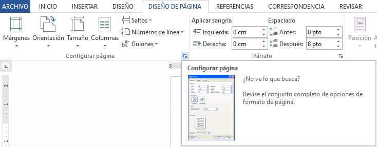
Se abrirá la siguiente ventana:
Las opciones están clasificadas en las pestañas Márgenes, Papel y Diseño
Otras opciones de impresión
La configuración de Word también afecta a la impresión, aunque a veces no seamos conscientes de ello. existen algunos
elementos que por defecto no se imprimen, como los colores e imágenes de fondo. Normalmente está configurado así para
ahorrar tinta en las copias impresas, pero podemos cambiarlo.
En Archivo > Opciones abrimos la ventana de Opciones de Word. Deberemos situarnos en la opción Mostrar del menú que se
encuentra en el lateral izquierdo y ahí es donde encontraremos una serie de Opciones de impresión que podremos activar
o desactivar según nuestras necesidades.
Impresora virtual
En la ventana de impresión, podemos seleccionar la impresora de entre las que tenemos instaladas. Frecuentemente se cuenta
con una impresora virtual. Existen impresoras virtuales que imprimen en PDF.
La impresora virtual es una impresora que realmente no existe físicamente. Es una especie de "engaño" al sistema.
Se trata de un programa que se hace pasar por impresora, pero en vez de enviar la información que se imprime a la
bandeja de impresión, lo que hace es imprimirlo como un archivo. Es decir, que aparecerá un cuadro de diálogo
preguntándonos dónde guardar el archivo. Siempre disponemos de la impresora virtual que incluye Windows, llamada
Microsoft XPS Document Writer, que imprime un archivo de formato .xps.
Observación:
También podemos guardar un documento Word en formato PDF desde
Guardar como ... eligiendo
el tipo PDF, lo que equivale a imprimirlo en una impresora virtual.
Referencias
Marcadores
Un marcador en Word funciona
como un marcador que puede colocar en un libro: marca un lugar que desea encontrar fácilmente. Puede escribir
tantos marcadores como desee en el documento
Agregar marcador en una ubicación
- Para agregar un marcador, primero debe marcar la ubicación del marcador en el documento.
- Luego, hacer clic en la pestaña Insertar > Grupo Vinculos > seleccionar Marcador. 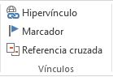
o bien presionar la siguiente combinacion de teclas: Ctrl + Mayús + F5.
- En Nombre del marcador,escriba un nombre y haga clic en Agregar.
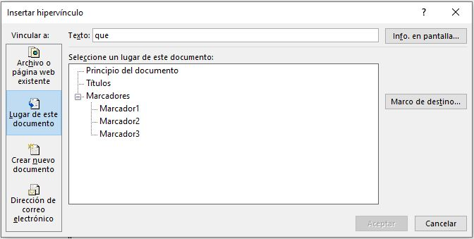
Observación: Los nombres de marcador tienen que comenzar por una letra. Pueden incluir números y letras,
pero no espacios. Si tiene que separar palabras, puede usar un carácter de subrayado ( _ )—por ejemplo, Primer_título.
Ir a la ubicación de marcador
Después de crear los marcadores, puede agregarles vínculos dentro del documento o saltar a ellos en cualquier momento.
Saltar a un marcador
- Presione la combinacion de teclas Ctrl+G para abrir la pestaña Ir a en el cuadro Buscar y reemplazar.
- En la pestaña inicio> grupo edición
 > buscar 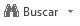 > Ir a... > Marcador.
Escriba o seleccione el nombre del marcador y, a continuación, haga clic en Ir a.
> buscar 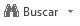 > Ir a... > Marcador.
Escriba o seleccione el nombre del marcador y, a continuación, haga clic en Ir a.
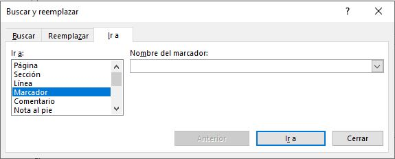
Vínculo a un marcador
También puede agregar hipervínculos que le llevará a una ubicación con marcadores en el mismo documento.
- Seleccione el texto u objeto que desea usar como hipervínculo.
- Haga clic con el botón derecho y, a continuación, haga clic en Hipervínculo 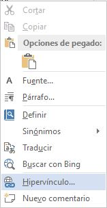
- En Vincular a, haga clic en Lugar de este documento.
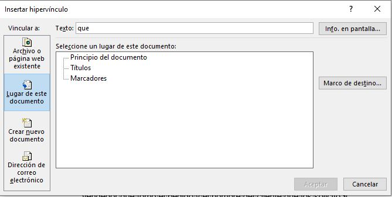
- En la lista, seleccione el encabezado o marcador al que desea vincular.
- Para finalizar haga clic en Aceptar.
Observación: Para personalizar la información en pantalla que aparece cuando mantiene el cursor sobre el hipervínculo,
haga clic en Información en pantalla, y luego escriba el texto que quiere.
Eliminar un marcador
- Hacer clic en la pestaña Insertar > Grupo Vinculos > seleccionar Marcador.
- Haga clic en Nombre o Ubicación para ordenar la lista de marcadores del documento.
- Haga clic en el nombre del marcador que desea eliminar y, a continuación, haga clic en Eliminar.
- Si ha insertado un hipervínculo al marcador eliminado, haga clic con el botón derecho en el texto vinculado y, a continuación, haga clic en Quitar hipervínculo.
mostrar marcadores en nuestro documento
Normalmente los marcadores permanecen ocultos, a no ser que activemos la opción para mostrar Marcadores ocultos.
Lo haremos desde el menú Archivo > Opciones. Una vez abierto el cuadro de diálogo deberemos seleccionar la
categoría Avanzadas, en la lista de la izquierdaubicar las opciones relativas a Mostrar contenido de documento,
ahí marcaremos la opción Mostrar marcadores.
Cuando pulsemos Aceptar y se cierre el diálogo Opciones veremos en nuestro documento aquellos marcadores que hemos incluido.
Notas al pie y al final
Las notas al pie y las notas al final son utiles para explicar, comentar o proporcionar referencias a un elemento
de un documento. Normalmente, las notas al pie aparecen en la parte inferior de la página, mientras que las notas al final
se encuentren al final del documento o de la sección.
Agregar una nota al pie
- Primero tenemos que hacer clic en el lugar donde desee agregar la nota al pie.
- Luego hacer clic en la pestaña Referencias> Grupo Notas al pie 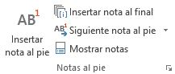>
Insertar nota al pie 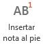.
Entonces, Word inserta una marca de referencia en el texto 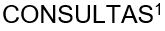
y agrega la marca de la nota al pie en la parte inferior de la página 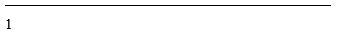.
- Escriba el texto de la nota al pie.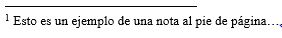
Agregar una nota al final
- Haga clic en el lugar donde desee agregar la nota al final.
- Haga clic en la pestaña Referencias> Grupo Notas al pie
> Insertar Nota al final .
Word insertará una marca de referencia en el texto y agrega la marca de la nota al final en la parte final del documento.
- Escriba el texto de la nota al final.
Personalizar las notas al pie y notas al final
Para personalizar una nota al pie o nota al final, podemos seguir los siguientes pasos:
-
Haga clic en la marca numérica de referencia o en el cuerpo del texto o hacer clic en la pestaña
Referencias> Grupo Notas al pie (para las notas al final, haga clic en la pestaña Referencias
> Mostrar notas al final).
-
En la vista de notas al pie o notas al final, haga clic en dar formato a las notas al pie o dar formato a notas al
final para mostrar el cuadro de diálogo Opciones de formato , donde puede cambiar el tamaño, la fuente y la sangría
de una o de todas las notas al pie o notas al final.
Referencias cruzadas
Una referencia cruzada 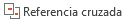 le permite vincular a otras partes del mismo documento. Por ejemplo, puede usar una referencia
cruzada para crear un vínculo a un gráfico que aparece en otra parte del documento. La referencia cruzada aparece como
un vínculo que lleva al lector al elemento al que se hace referencia.
Observación: No puede hacer referencias cruzadas a algo que no existe, por lo que es preciso asegurarse de crear
el gráfico, título, número de página, etc., antes de intentar vincularlo. Al insertar la referencia cruzada, verá un
cuadro de diálogo que enumera todo lo que está disponible para vincular. Aquí tiene un ejemplo.
Insertar la referencia cruzada
- Podemos acceder a esta herramienta en la pestaña Referencia > Grupo Títulos 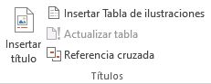
- Una vez en la ventana Referencia cruzada. En el cuadro Tipo de referencia 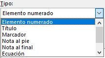,
haga clic en la lista desplegable para elegir lo que desea vincular. La lista de los elementos que están disponibles depende del tipo de elemento
(título, número de página, etc.) que esté vinculando.
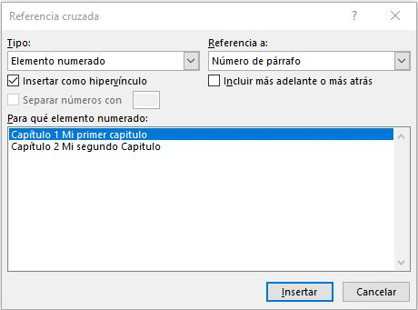
- En el cuadro Insertar referencia en 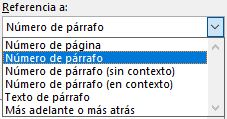,
haga clic en la información que desea insertar en el documento. Las opciones dependen de lo que eligió en el paso 3.
- En el cuadro Para qué, haga clic en el elemento específico que desea hacer referencia, como "Insertar la referencia cruzada".
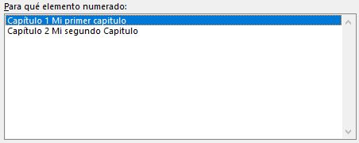
- Para permitir a los usuarios que vayan al elemento al que se hace referencia, seleccione
la casilla Insertar como hipervínculo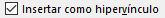.
- Si la casilla Incluir por debajo/por encima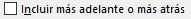 está disponible, compruébela para incluir la posición relativa
específica del elemento al que se hace referencia.
- Finalmente hagamos clic en Insertar.
Observación: Las referencias cruzadas se insertan como campos
Las referencias cruzadas se insertan en el documento como campos. Un campos es un conjunto de información que indica
a Word que inserte texto, gráficos, números de página y otros materiales en un documento de forma automática.
Por ejemplo, el campo DATE inserta la fecha actual. La ventaja de usar campos es que el contenido que se inserta
(fecha, número de página, gráficos, etc.) se actualiza siempre que exista un cambio. Por ejemplo, si está escribiendo
un documento durante un período de días, la fecha cambiará cada día al abrir y guardar el documento. De forma
similar, si actualiza un gráfico que está almacenado en otro lugar pero al que se hace referencia en el campo,
la actualización se detectará automáticamente sin tener que volver a insertar el gráfico.
Si ha insertado una referencia cruzada con una apariencia similar a {REF _Ref249586 \* MERGEFORMAT}, Word muestra los
códigos de campo en lugar de los resultados de los campos. Al imprimir el documento u ocultar códigos de campo,
los resultados de campo reemplazan a los códigos de campo. Para ver los resultados de campo en lugar de los códigos de
campo, presione ALT + F9, o haga clic con el botón derecho en el código de campo y, luego, haga clic en Activar o desactivar
códigos de campo en el menú contextual.
Combinaciones de correspondencia
La combinación de correspondencia le permite crear un lote de documentos personalizados para cada destinatario.
Por ejemplo, una carta puede personalizarse para dirigirse a cada destinatario por su nombre. Los orígenes de datos,
como las listas, hojas de cálculo o bases de datos, están asociados al documento. Los marcadores de posición
(denominados campos de combinación) indican a Word en qué parte del documento incluir información del origen de datos.
El primer paso para configurar la combinación de correspondencia consiste en seleccionar el origen de datos que usará para
la información personalizada. Las hojas de cálculo de Excel y las listas de contactos de Outlook son los orígenes de datos
más comunes, pero se puede usar cualquier base de datos que se pueda conectar a Word. Si aún no tiene un origen de datos,
puede incluso escribirlo en Word como parte del proceso de combinación de correspondencia.
La combinación de correspondencia es una de las herramientas más utilizadas en Word. Este proceso es muy utilizado
en muchos sectores, tanto para que una secretaria cree invitaciones para un evento, un administrativo envíe cartas a sus
clientes en sus cumpleaños, o que un banco envíe diferentes recordatorios a los deudores con cuentas pendientes o los
famosos estados de cuentas de las diferentes tarjetas de créditos que recibimos mes a mes. De ahí que esta herramienta puede
resumir todo el trabajo de una jornada completa en pocos minutos.